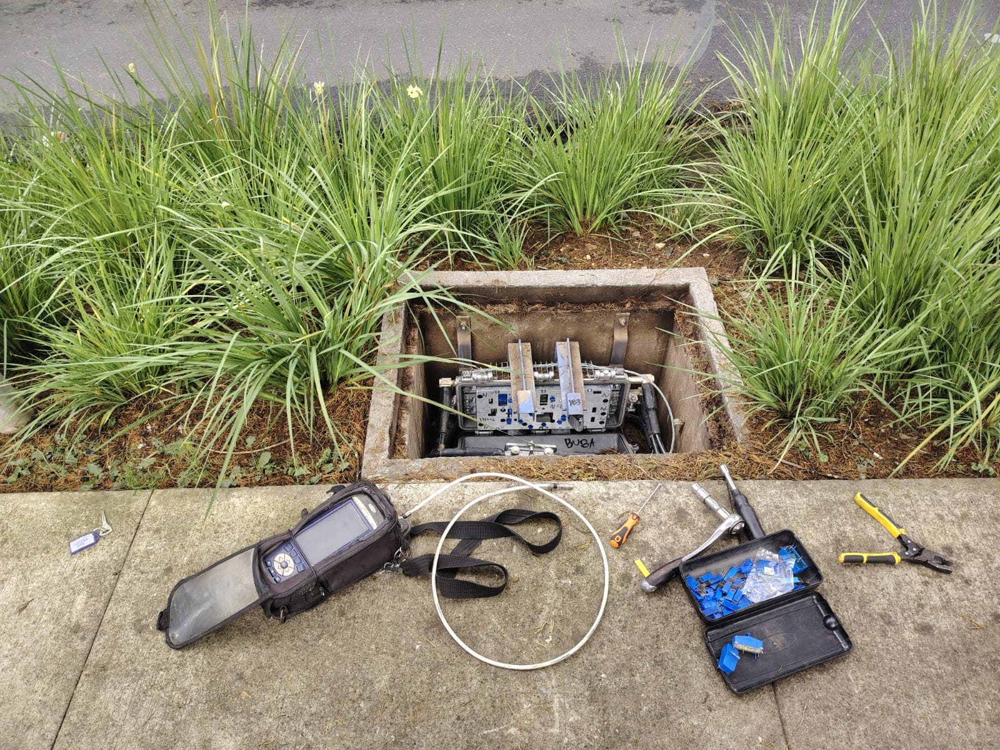
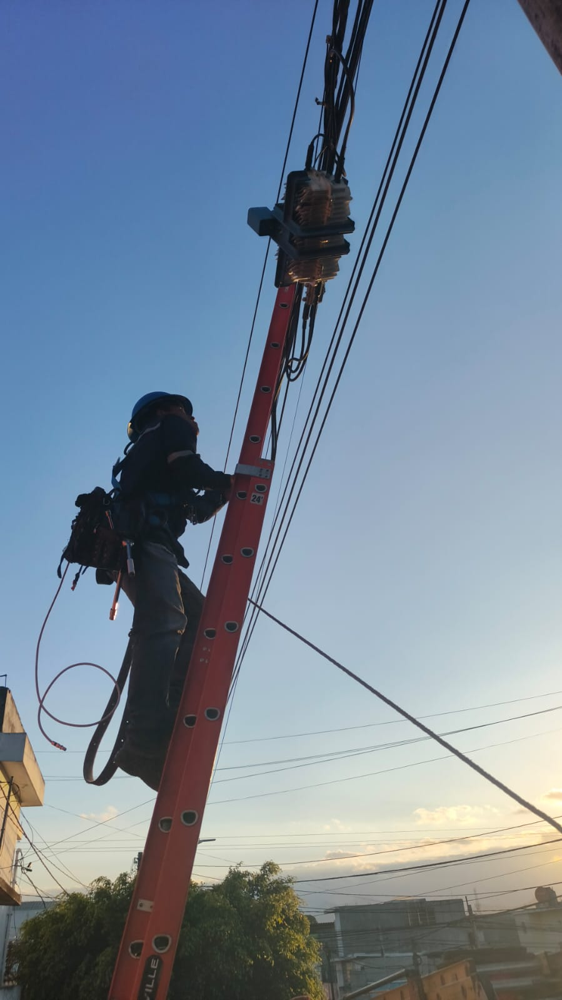

Mis Proyectos





Tecnologías utilizadas
- HTML5
- CSS3
- JavaScript
- GitHub Pages
Proceso de desarrollo
- Planificación del proyecto
- Diseño de wireframes y mockups
- Codificación y pruebas
- Publicación en línea
Tabla de proyectos
| Proyecto | Descripción | Tecnologías |
|---|---|---|
| Recetario Digital | Sitio web | HTML, CSS |
| Portafolio Creativo | Diseño personal en línea | HTML, CSS, JS |
| Dashboard Escolar | Panel académico con gráficos | HTML, CSS, JS |
| Sistema de Inventario | Gestión de productos | HTML, CSS, JS |
| Blog Técnico | Publicaciones sobre telecomunicaciones | HTML, CSS |